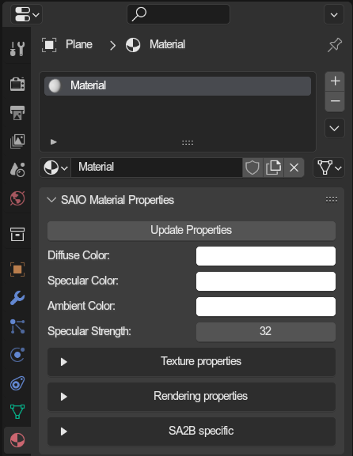
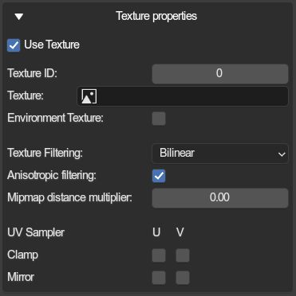
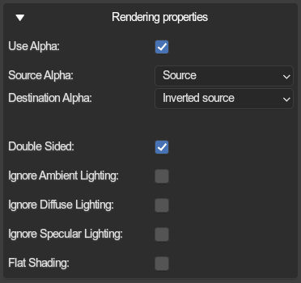
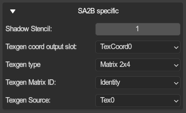

Material properties🔗︎

Every material now has a new menu added with the name SAIO Materia Properties, which is used for setting material properties used on export.
General Properties🔗︎
Diffuse Color🔗︎
The lit surface color.
Specular Color🔗︎
The specular color for when reflecting light. Only works in SA1 (by default).
Ambient Color🔗︎
The base/unlit surface color (basically "shadow" color).
Specular Strength🔗︎
How sharp the specular reflection should be. Lower value = smoother hotspot, while higher values = sharper hotspot.
Texture Properties🔗︎

Properties related to applying textures to the model surface.
Use Texture🔗︎
Whether textures should be used. If disabled, the other texture properties get grayed out (but are still interactable).
Texture ID🔗︎
An index referring to a texture in the models texture list. Gets ignored if a texture image is set, but acts as fallback in case no texture ID is found for the image.
Texture🔗︎
A direct inclusion of a texture dropdown selection for the materials texture node. Will override the texture id if possible.
Environment Texture🔗︎
Instead of using a UV map, the game will use normals and the camera view to decide how to choose how to render the texture. It is used for reflection maps or similar, very comparable to Blenders Matcap view mode. Does not work for SA2B.
Texture Filtering🔗︎
The texture filter mode to apply ingame.
Nearest Neighbour: No filtering at all (sharp pixels)Bilinear: Bilinear filtering (transitioning between pixels)Trilinear: Trilinear filtering (transitioning between pixels and mipmaps)Blend: Bi- and Trilinear filtering blended together (???)
Anisotropic filtering🔗︎
Also known in the game as "Super sampling". May not properly work.
Mipmap distance multiplier🔗︎
Increases the distance threshold between the model and camera at which the mipmap level increases.
UV Sampler🔗︎
For clamping and mirroring the uv channels.
Rendering properties🔗︎

Various rendering properties to alter how the shading gets calculated for the material.
Use Alpha🔗︎
Makes use of the alpha properties in the texture and diffuse color to render the material transparent
Source & Destination Alpha🔗︎
Determines the GPU math used for blending alpha blending.
Common Combinations (Source & Destination):
Source&Inverted Source: Default transparencyOne&One: Additive blendingDestination&Zero: Multiplicative blending
Read more here
Double Sided🔗︎
Essentially "Backface Culling" but inverted. The games dont properly support this (unless you use mods that fix it).
Ignore [shading property]🔗︎
Excludes the various colors from the lighting calculations. Behave differently in each game.
Flat Shading🔗︎
Ignores vertex normals and instead uses "flat" polygon normals.
SA2B Specific🔗︎

These properties are exclusive to SA2B models.
The texture coordinate properties are used for changing how UVs apply, like using Environment mapping.
Common setups:
| Setup | Output | Type | Matrix | Source |
|---|---|---|---|---|
| Default | Texcoord0 | Matrix 2x4 | Identity | Tex0 |
| Environment mapping | Texcoord0 | Matrix 3x4 | Matrix 4 | Normal |
Shadow Stencil🔗︎
Changes how the shadows intersect (?)
Texgen coord output slot🔗︎
The texture channel to which these properties apply. Only TexCoord0 works
Texgen type🔗︎
The math used to alter the uvs (?)
Texgen Matrix ID🔗︎
Which matrix should be used to alter UVs
Texgen source🔗︎
The data to use as source